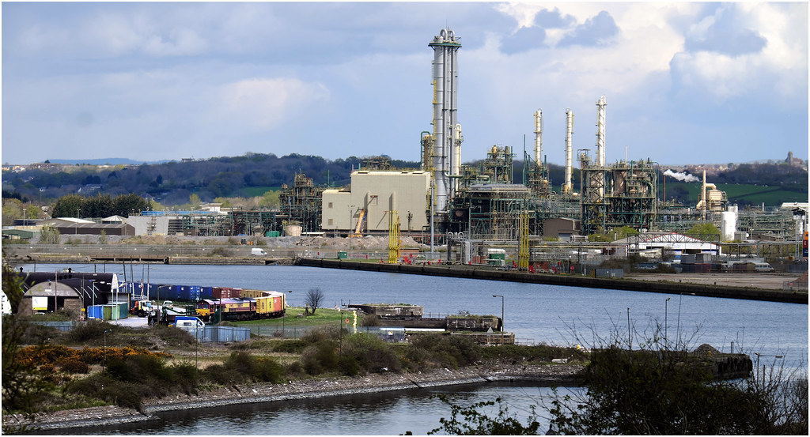
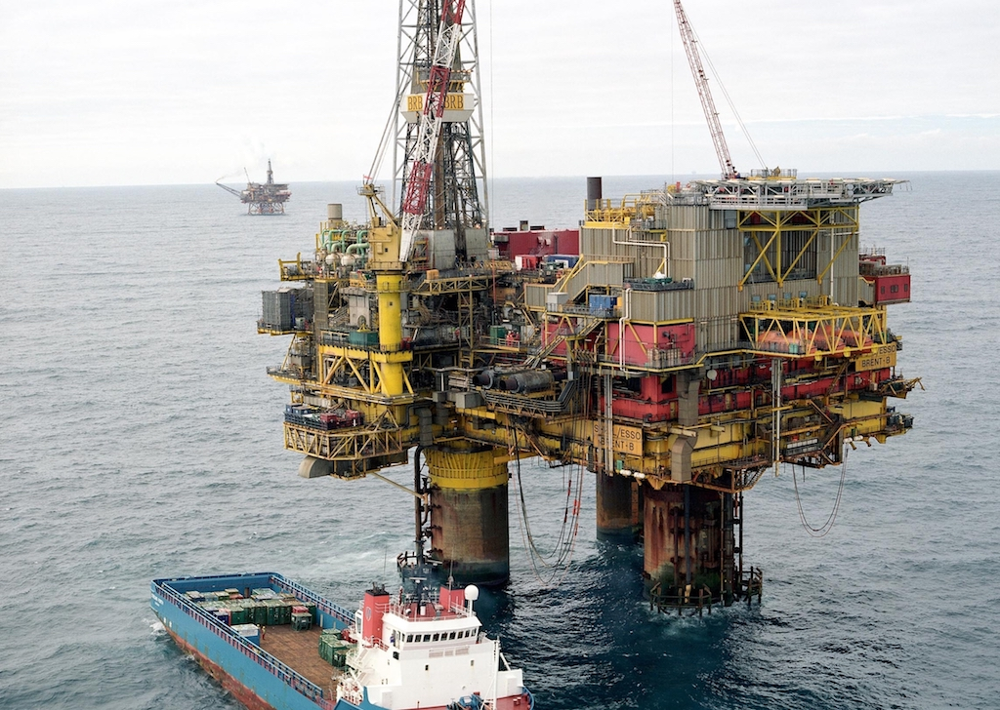

Whilst at school I had a number of Saturday jobs, the best being with Sainsbury's in Potters Bar High Street. However, my first 'full time' job was with Friern Barnet council, initially as an assistant caretaker at a school and then at the council office. I did this work during each of my summer holidays while at university. At the end of my first year, the job allowed me to earn enough to buy my first car.
During my time studying physics at the University of Lancaster I became convinced that the future lay with nuclear power. I thought that fusion power would be the most interesting, since it hadn't yet been achieved, but after a little research I decided that the maths was far too heavy for me. So I turned to fission power. I had offers at Lancaster for a PhD in high energy nuclear physics and another to continue my undergraduate project on single crystal graphite, but I wanted to do something that I though would make a difference. For high energy physics I would be one person working on a very small part of a very large project with a very large team. The professor responsible for the graphite work only seemed interested in pure research, whereas I was already thinking about practical applications. I'm sure that having these two offers was the only reason that I managed to get a 2:1.
I also had an offer of a place on the MSc Nuclear Engineering course at Birmingham University and an offer of a Graduate Apprenticeship at Rolls Royce and Associated in Derby. RR&A designed nuclear reactor plant for submarines and the graduate apprenticeship involved moving around several departments in the first year, including a term at the Royal Navel College in Greenwich. So in September 1969 I joined RR&A, working in the Physics, Structural Engineering and Test Instrumentation departments, as well as the spell in Greenwich. At the end of the year I joined a small team (three of us, led by Paddy Stone) who developed the computing tools that were used by those doing the physics design of the reactor core. Basically they had to work out the power generated in each part of the reactor and how this would vary over the core's lifetime. In the early 70s we were still at the stage of using mainframe computers, submitting our stack of punched cards and getting back the resulting print-out. So software development could take quite a long time.
I think that it was in 1972 that John Taylor, my friend from Lancaster, and who did the course at Birmingham, joined the radiation shielding group (also in the Physics Department) at RR&A. Then at another forgotten date Paddy left to become a teacher and John was given his job. This was quite a blow. His group leader, with whom I played hockey, explained that he pushed his people forward, but my group leader apparently never talked of his staff. It then wasn't very long before John moved to a group in Warrington who either ran the Sellafield site in Cumbria or did a lot of work for them. So I was given the section leader job, much to the annoyance of Judy McNicholas who was the other member of the team. She thought that she should have got the job. Judy had joined RR&A because her fiancé Paul, an engineer, already worked for RR&A. In fact Judy and Paul and Angela and I got married on the same day and Paul (an 18 stone rugby player) and I had a joint stag party. We ended up being chained together!
One of the problems with doing work funded by the MoD was that every two years, or there a-bouts, they would cancel the contract and we would start on something new. In 1975 this happened again and so I looked for a job in the civil nuclear reactor field. I failed to get a job with the UK Atomic Energy Authority, but I did with the National Nuclear Corporation (which might have been called the Nuclear Power Company at the time), who were designing the next generation of civil reactors. I started with them on 20th October 1975, working in a group led by Alan Goode. It was quite a change, using different computer systems and doing design analysis rather than developing tools. However, after two years the contract on which we were working was cancelled!
You can find out more about the type of work that I did in the field of nuclear reactor design here.
Just after that, Angela saw an advertisement in a local newspaper about an 'open evening' to find out more about Ferranti Computer Systems, so I went along and was then invited for an interview. I can't actually remember the interview, but I started work at FCS in south Manchester on Monday 6th February 1978 as a project programmer. Now this was a complete change!
FCS was the only division of Ferranti that did not do any military work. They designed and built their own range of mini-computers (the Argus 700 range at the time), along with all the other electronics needed to interface the computer to sensors and actuators to control process plant. They also wrote their own real-time operating system, compiler (for the Coral language) and utilities. The company addressed a number of markets, but in the industrial sector they tackled process control, power generation and electricity distribution. In the first of these they had developed a package called PMS (Process Management System).
I joined FCSL as a project programmer and after a few weeks of training courses was assigned to the BP Barry project team, which varied in size from three to seven members of the software team, plus a project manager cum hardware engineer. From the start I was 'Senior Staff', which gave certain perks such as eating in the Senior Staff canteen where you had tablecloths, flowers on the tables and waitress service. I suppose it was fairly high pressure. We had our client, an engineering contractor who was doing the application programming, and their client, BP Chemicals. We were providing the base system, called PMS (Process Management System). Unfortunately the software system was still under development and some modules didn't yet exist. For example, my first job was to write a software driver that would read analogue values from electronic modules (referred to as cards) that measured 4-20 mA currents from sensors on the plant. The current was passed through an analogue to digital converter and certain commands could be used in the software to then read the values. At that time many of our clients had been sold a concept rather than an existing hardware and software product. The range of input/output cards that we were using had not been used before. The more senior members of the team fell by the wayside and so I became firstly the software team lead and then project manager, the first software person to take on that role. It was quite an eye-opener to take the team to site for commissioning and see what our software was actually controlling.
That first project was actually the only programming job that I did. For a while I 'helped out' specifying software for a system for the Morecambe Bay Gas Field. Again, a lot of the software to provide functionality that had been sold did not exist. That was quite a large software team and I was to be involved in the project later from a different angle.
At the time, our division of FCSL had three project groups, one for the process industries, one for electricity distribution systems and one specifically for Shell North Sea Operation. In 1980 I was made Software Manager for that latter group. I can't remember now how many offshore platforms had our systems installed. There were at least three in the Brent field, plus a few others, as well as a control centre in Aberdeen. The software was an even earlier version of PMS and had become very 'Shell' specific, including wide area network communications and the use of what are called Remote Telemetry Units (RTU) for the inputs and outputs to the plant. These RTUs were made by another part of Ferranti. We also supplied a pipeline monitoring system that continuously checked for leaks in all the pipelines that ran from the rigs back to the terminal onshore. During my time in the Shell group I also project managed the installation of a new system on the Fulmar platform.
Luckily we were able to move the system support, including the most knowledgable programmer, up to the Aberdeen office. I then did some consulting for the Morecambe Bay Gas Field project and was asked to help evaluate a potential replacement for our PMS hardware and software. The hardware design manager, the marketing manager and I went to Portland in Oregon to spend a week with a company that had developed a triple modular redundant (TMR) system for safety control that they thought would also be suitable for process control. It turned out that, although their hardware and logic control software was well developed, their operator interface, which they had glowingly described, was practically non-existent. So in the end nothing came of it.
At that time the process industries group was divided into two project groups, one handling mainly oil and gas projects (excluding Shell, but including Morecambe Bay) and one for the chemical industries, plus a PMS software development group. The Group Manager of the Oil & Gas group was sent off on a one-year management course and so in 1983 I was made Deputy Group Manager while he was away. However, when he returned he was given another job and I was made Group Manager. With expansion in mind, the whole project area was reorganised in 1986 and I was given a new role of Business Manager, with responsibility for the two process industries project groups and the development group, a total of about 125 people.
During this period the manager of the other project group resigned; he thought he should have been given my job. However, I set up tools to help us manage our resources (mainly staff) within the three Business Groups and, in collaboration with the (new) marketing manager, investigated another possible successor to our PMS system. It was clear that our system was ageing and it was becoming harder to compete against the likes of Honeywell, Foxboro and Siemens. It was also clear that we could not afford to develop a new system from scratch. So collaborating with a start-up company seemed like a good idea. I visited such a company in Boston on a couple of occasions and brought a small system back to Manchester for further evaluation. I was pushing hard for our management to make a deal with the US company.
Then things started to fall apart. The General Manager was fired and the person who had been the contracts manager was given the job. He was a friend of the person who had resigned; and who he brought back. The new GM made my boss and the other two Business Managers redundant, saying that I was only kept on because of my technical expertise. I was put in charge of the two development groups, which was a bit of a non-job, since the two groups were poles apart, one developing PMS and the other trying to use the programming language Ada to develop a completely new system for electricity distribution. So both were going down their own path. Also, a director of FCSL decided that we did not need to enter into an arrangement with another company to 'refresh' our process control system; "we could do it better ourselves".
In 1990 I was asked (told) to take 'voluntary' redundancy! Actually I wasn't very good at managing people. As it happened the whole Ferranti company collapsed, having been defrauded by an American company they had bought.
All that took 12 years and, of course, this caused a big disruption to our lives. I got a job with a small 'systems house' in Crawley, 200 miles south of where we were living and moved south on my own for six months. As it happens, the CEO of the US start-up had told his friend, the MD of a controls company in Worthing (Turnbull Control Systems, part of the Eurotherm group), about me and I had visited them to talk about joining them, so I new something of the South Downs area. TCS did not know when a position would become available, so I joined Realm Control Systems.
So in 1990 I moved to being Software Manager for Realm Control Systems and after six months we moved from Lymm to Steyning. The only problem was that they were in Crawley. This meant moving south, changing the children's schools, leaving friends and organisations in Lymm. I've always felt guilty about inflicting this on us all, but I needed an income. I moved down on my own for six months and in June we moved into Kingsmead Close, which we thought was in Steyning. It turned out to be in Bramber, but was equidistant from the centre of both. At the time it was the biggest house (bungalow) that we could afford in the area we wanted to live.
However, my time with Realm only lasted just over a year. One day I was told that they could no longer afford to employ me and I was made redundant. Shortly after, they went out of business. As I said, I had spoken with TCS (Turnbull Control Systems) in Worthing before moving to Realm and in November 1991 I joined their Offshore Oil and Gas group. The Eurotherm group had a number of small companies, all around Worthing, each initially run by one of the Eurotherm founders. However, the directors of TCS were always uncomfortable about the large systems we were trying to sell. The company was built around 'boxed products' and small systems. So after a couple of years the group was disbanded and later I was made redundant again.
One of the bigger players in the control system business and a competitor of both FCSL and TCS was Foxboro. They were basically a US company, based in Foxboro, Massachusetts, but had their main UK office in Crawley. In November 1994 I joined them as Principal Engineer. When I started with them they were owned by Siebe, a British company. Later they merged with another group and became Invensys. A short while after I retired, 18½ years later, Invensys was bought by the French company Schneider Electric.
During my time with Invensys I led projects, became one of a few batch control specialists (which took me around the world), worked with an international pharmaceutical marketing group and became part of a special project group aimed at increasing our engineering efficiency, which morphed into an international team. My role in that team concerned the development of engineering tools. However, although we developed a number of tools, using a software team in Hyderabad, I failed to convince the company to develop what I still think was really needed. So I was ready to retire on the 1st July 2013.
You can find out more about my involvement with industrial control systems here.